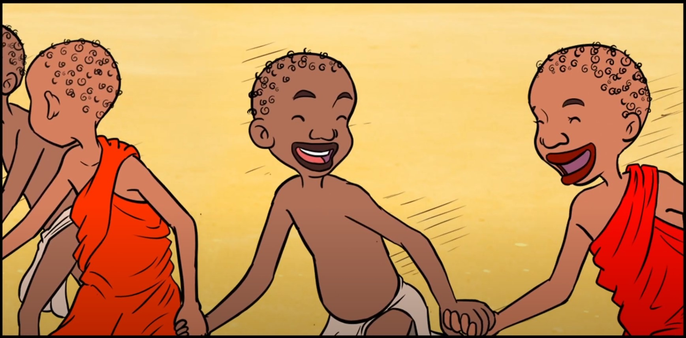

|  |  |
 |
 |
 |
 |
 |
 |
 |
 |
 |
 |
 |
 |
더불어 살아가는 지혜(3분 33초) 서로 배려하고 함께 나누는 공동체의 삶에 대한 메시지 전달 |
세상을 변화시키는 공감의 힘(1분 50초) 다양한 상황 속에서 나, 우리, 시민사회로 생각을 확장하며 공감능력을 향상 |
남을 위해 쓰는 마음, 배려 (10분 12초) 다른 사람들에게 관심을 갖고 공감하며 나눔을 실천 |
너에게로 닿는 길-친절과 배려의 가치 다른 사람의 입장을 고려하고 배려하는 사람은 손해를 보는 것 같은 기분이 들 때 배려가 지닌 힘에 대한 가치를 고민해보고 실천화 |
더불어 가는 길-진정한 소통의 의미 다수결이 의미있기 위한 진정한 소통과정을 학습 |
너에게로 닿는 길-디스를 넘어서 각자가 지닌 가치를 이해하고 차별이 아닌 차이의 관점에서 서로를 바라보는 태도 기르기 |
공감하고 배려하며 말하기 공감하고 배려하는 듣기와 말하기를 통한 소통의 중요성 전달 |
너에게로 닿는 길-달라도 너무 다른 너, 어떻게 대처해야 할까? (73-74p) 다른 사람의 입장을 고려하고 배려하는 사람은 손해를 보는 것 같은 기분이 들 때 배려가 지닌 힘에 대한 가치를 고민해보고 실천화 |
공감하고 배려하며 말하기 긍정적 마음과 자아존중감을 바탕으로 자신과 상대방을 존중하는 대화의 중요성 전달 |
너에게로 닿는 길-피할 수 없는 갈등, 어떻게 해야 할까?(123p) 언어 습관 등으로 편견이 생길 수 있음을 이해하고 자신의 언어 습관을 되돌아볼 수 있는 계기 제공 |
공동체에 공헌하기(톤즈 마을의 이태석 신부 이야기) 한살공 프로젝트 워크북(115p) 공동체의 생명을 위하는 사례를 살펴보며 우리 삶과 공동체에 대한 공헌을 반성 및 실천 의지 제고 |
안다미로 2. 가족의 진정한 의미는 무엇일까?(103p) 늘 곁에 있어 소중함을 잊기 쉬운 가족에 대해 다시 생각하며 화목한 가정을 만들기 위한 노력 경주 |
안다미로 6. 피할 수 없는 갈등, 어떻게 해야할까(122p) 가족, 남녀, 친구 사이에 일어날 수 있는 갈등의 원인을 파악하고 극복하기 위한 해결책 찾는 연습하기 |
언제 어디서나 우리는, 존중과 책임 대면/비대면 상황에서 본인, 친구, 선생님, 부모님과의 관계 속에서 서로 존중하고 책임있게 행동하는 태도를 함양 |